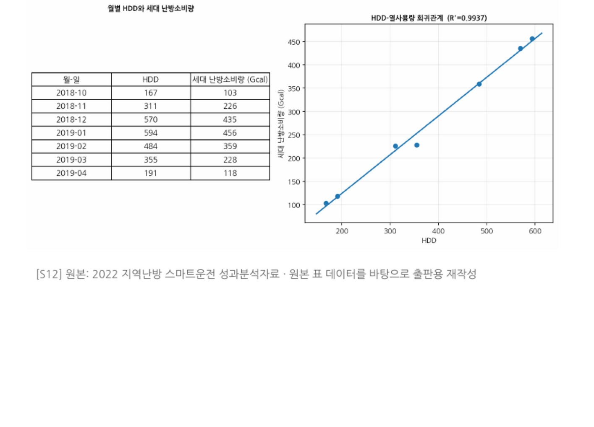

데이터로 찾는 산업·건물 에너지절감 실무 — 106쪽
그림 24-3. HDD 와 열사용량 회귀관계. [S12] 원본 표 데이터를 바탕으로 한 회귀관계를 비식별 형태로 복원. IMPLEMENTATION | 난방·급탕 서비스와 실내 난방품질을 유지하고 Non- routine Event 를 기록한다. 검증성과와 향후 목표를 구분한다. M&V | 평가기간 HDD 를 반영한 Adjusted Baseline 과 Actual 의 차이로 실제 열사용 절감성과를 검증한다. CASE 40 | 응용사례 — 지역난방 공급수온·배관 열손실·공급펌프 통합 운 전최적화 다수 수요처의 열수요·유량·공급/환수온도와 공급측 운전데이터를 비교해 공 급수온과 배관 열손실, 공급펌프 운전을 통합 분석한 진단·제안 사례다. KPI·운전기준·진단 로직 2020 년 공급측 연평균 공급수온 약 101℃. 수요측 실제 이용 공급수온은 약 86℃ 수준으로 약 15℃의 온도여유가 관찰되 었다.

인쇄본 기준 p. 106